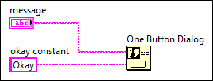
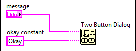

Open example
Open example  Find related examples
Find related examplesRequires: VI Scripting
Because block diagram objects in a VI are connected by terminals and wires, you can use a reference to one object to gain access to other connected objects. You can use this strategy of navigating a target VI in the following situations:
If you can connect objects together manually in LabVIEW, LabVIEW most likely provides a property or method that allows you to navigate those connections programmatically. Therefore, all navigation tasks involve obtaining a reference to a starting object and then using the necessary properties and methods to obtain references to the connected objects. You can segment large navigation tasks into the following navigation subtasks:
The following example demonstrates how you can combine some of the previous navigation subtasks to solve a larger navigation problem.
You can write a scripting VI that replaces a One Button Dialog function with a Two Button Dialog function in any target VI. However, after making this replacement, you must ensure that the object that was wired to the button name input of the One Button Dialog function is wired to the T button name input of the new Two Button Dialog function. The following images illustrate the desired change.
| Before | After |
|  |  |
To replace the One Button Dialog function, you need only a reference to the function. However, to ensure that the original wiring persists to the new Two Button Dialog function, you also require a reference to the object that is wired to the button name input of the One Button Dialog function. You can obtain this string reference by navigating the connections between the One Button Dialog function and the connected object.
The following outline highlights the navigation subtasks that are necessary to navigate from the One Button Dialog function to the object wired to its button name input. Refer to the individual task topics for specific information about how to implement each task.
After completing these three navigation tasks, you have access to all the references you need to complete the task.
Refer to the Navigation Overview VI in the labview\examples\Application Control\VI Scripting\Finding and Modifying Objects directory for a full solution to this scripting task.
Open example Find related examples